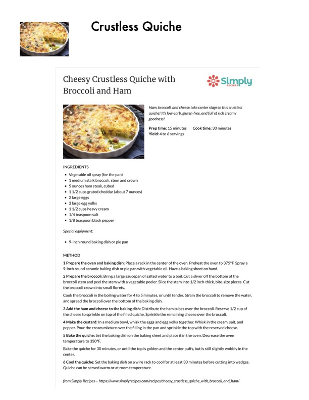

Cheesy Crustless Quiche with Broccoli and Ham

Original cookbook page 141
Ham, broccoli, and cheese take center stage in this crustless quiche! It's low-carb, gluten-free, and full of rich creamy goodness!
Prep: 15 minutes • Cook: 30 minutes • Total: 45 minutes
Ingredients
- Vegetable oil spray (for the pan)
- 1 medium stalk broccoli, stem and crown
- 5 ounces ham steak, cubed
- 1 1/2 cups grated cheddar (about 7 ounces)
- 2 large eggs
- 3 large egg yolks
- 1 1/2 cups heavy cream
- 1/4 teaspoon salt
- 1/8 teaspoon black pepper
Instructions
- Prepare the oven and baking dish: Place a rack in the center of the oven. Preheat the oven to 375°F. Spray a 9-inch round ceramic baking dish or pie pan with vegetable oil. Have a baking sheet on hand.
- Prepare the broccoli: Bring a large saucepan of salted water to a boil. Cut a sliver off the bottom of the broccoli stem and peel the stem with a vegetable peeler. Slice the stem into 1/2 inch-thick, bite-size pieces. Cut the broccoli crown into small florets. Cook the broccoli in the boiling water for 4 to 5 minutes, or until tender. Strain the broccoli to remove the water, and spread the broccoli over the bottom of the baking dish.
- Add the ham and cheese to the baking dish: Distribute the ham cubes over the broccoli. Reserve 1/2 cup of the cheese to sprinkle on top of the filled quiche. Sprinkle the remaining cheese over the broccoli.
- Make the custard: In a medium bowl, whisk the eggs and egg yolks together. Whisk in the cream, salt, and pepper. Pour the cream mixture over the filling in the pan and sprinkle the top with the reserved cheese.
- Bake the quiche: Set the baking dish on the baking sheet and place it in the oven. Decrease the oven temperature to 350°F. Bake the quiche for 30 minutes, or until the top is golden and the center puffs, but is still slightly wobbly in the center.
- Cool the quiche: Set the baking dish on a wire rack to cool for at least 30 minutes before cutting into wedges. Quiche can be served warm or at room temperature.
Recipe #141 from collection